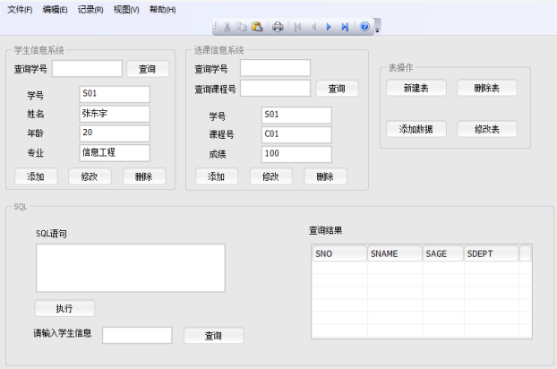
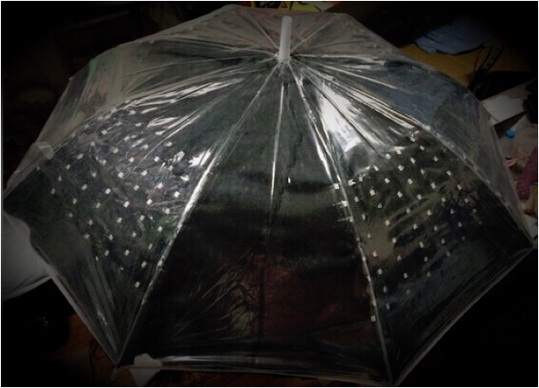

基于多媒体的信息检索平台
利用xiapian及分词工具等构建对文本的检索平台（设计文档解析程序、调用xapian建索引实现一般检索及特殊修饰符搜索功能）。
2016.09 - 2016.10

星空雨伞产品介绍网页制作
为创意作品（starry umbrella）设计制作网页，介绍产品创意来源、不同层次功能及对应价格、目标消费者群体，进行实物展示吸引广大顾客。
2016.06 - 2016.07

设计学生信息及选课系统
运用SQL Server及Visual Studio建立数据库、数据源、MFC项目，设计出可按照不同关键字查询学生信息、选课信息的系统。
在Visual Studio C++环境中通过ODBC实现与建立的数据库的互联， 通过嵌入式SQL对学生信息数据库进行操作，关系模式和数据的操作均通过应用程序界面完成。
2015.07 - 2015.08

设计制作智能避障小车
焊接制作小车，设计外观，单片机为中控核心、光电开关为探测障碍传感器，加入电机驱动芯片，利用keil编程语言完成智能控制，使其快速走出迷宫。
2015.06 - 2015.07

星空雨伞设计制作
用软导线连接制作8个8*8 蓝色LED点阵，采用热缩管绝缘，缝制在黑布上，将黑布固定在伞面内侧。利用Arduino、Fritzing、Visio等完成电路设计与控制、编写程序控制智能雨伞灯光闪烁及其图案。
2015.04 - 2015.05